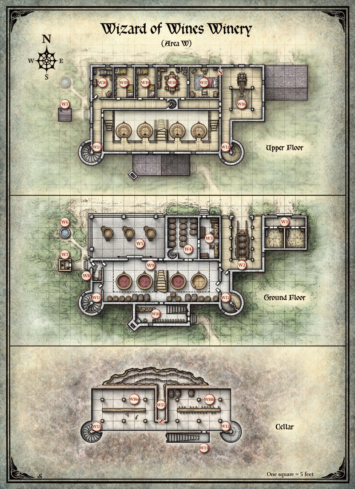

포도주는 바로비아(Barovia) 사람들의 생혈이다. 그들에게 남은 몇 안 되는 향유 중 하나이다. 이것 없이는, 많은 바로비아인들이 마지막 남은 희망마저 잃고 완전한 절망에 빠져들 것이다.
비스타니(Vistani)가 종종 먼 땅에서 포도주를 가져오기는 하지만, 그것을 자주 나누어주지는 않는다. 따라서, 바로비아의 포도주 대부분은 단 하나의 원천에서 나온다: 포도주 마법사(Wizard of Wines) 와이너리와 포도원이다.
포도주 마법사는 역사의 기록 속에 이름이 묻힌 한 마법사에 의해 설립되었다. 그 마법사는 세 개의 마법 보석을 만들었는데, 각각 솔방울만 한 크기였으며, 그것들을 비옥한 계곡 토양에 심었다. 이 "씨앗"들은 건강한 포도나무를 자라게 했고, 달콤하고 탐스러운 포도를 맺게 했다. 스트라드(Strahd)의 저주가 바로비아를 뒤덮은 뒤에도, 보석들은 포도나무와 열매가 어둠에 굴복하지 않도록 지켜주었다.
스트라드는 크레즈코프(Krezkov) 귀족 가문에게 그 충성의 대가로 와이너리와 포도원을 하사했다. 이후, 크레즈코프 가문과 마르티코프(Martikov) 가문 사이의 중매결혼으로 인해 토지가 마르티코프 후손에게 넘어갔다. 와이너리와 포도원은 그 이래로 쭉 마르티코프 가문이 관리해왔다. 어느 시점에서, 마르티코프 가문은 광범위한 수인증(lycanthropy)에 감염되었다. 현재 가장인 다비안 마르티코프(Davian Martikov)는 늑대까마귀(wereraven)이며, 그의 자녀와 손주들도 마찬가지이다.
늑대까마귀들은 바로비아의 술집들에 포도주를 무료로 제공하며, 그것이 바로비아 사람들에게 가져다주는 선을 알고 있다.
동물이 되는 것은 아무것도 아니니, 그것이야말로 모든 인간의 참된 본성이기 때문이다. 우리는 왕관을 쓰고 잔으로 술을 마시도록 태어난 것이 아니다.
— 스트라드 폰 자로비치(Strahd von Zarovich)
와이너리는 세 종류의 포도주로 유명하다: 평범한 퍼플 그레이프매쉬 No. 3(Purple Grapemash No. 3), 좀 더 매혹적인 레드 드래곤 크러쉬(Red Dragon Crush), 그리고 풍미 깊은 르 스톰프의 샴페인(Champagne du le Stomp)이다. 10년 전, 포도원의 마법 보석 하나가 파헤쳐져 도난당했고, 그 결과 와이너리는 최고급 빈티지인 샴페인의 생산을 중단했다. 아무도 그 보석에 무슨 일이 일어났는지 모른다. 다비안 마르티코프는 둘째 아들 어윈(Urwin, 제5장, 구역 N2 참조)이 보석이 사라진 밤에 경비를 서고 있었기 때문에 그를 탓한다. 다비안은 어윈이 약혼녀와 시간을 보내느라 임무를 게을리했다고 확신하며, 두 부자는 그때부터 사이가 벌어졌다. 오늘날까지도, 어윈은 아버지의 비난을 단호히 부인한다.
다비안의 불행에 더해, 늑대까마귀들은 바바 리사가(Baba Lysaga)의 허수아비 구조물이 가하는 빈번한 공격을 막아내야 했다. 3주 전, 그러한 공격 중 하나에서, 또 하나의 보석이 발견되어 파헤쳐지고 빼앗겼다. 다비안은 그것이 바바 리사가(제10장, 구역 U3 참조)의 수중에 있다고 믿고 있다.
다비안의 믿음은 정확하다. 그 보석은 바바 리사가에게 행운의 발견물이었다. 그녀는 이전부터 마법이 포도원 건강의 근원일 것이라 의심했지만 그 원천에 대해서는 아무것도 몰랐다. 이 대단한 발견 이후에도, 바바 리사가는 나쁜 이웃처럼 계속 허수아비를 와이너리에 보내 늑대까마귀들을 괴롭히고 있다.
5일 전, 사악한 드루이드(druid)들이 세 번째이자 마지막 보석을 훔쳐 예스터 힐(Yester Hill, 제14장)로 가져갔다. 늑대까마귀들은 보석을 되찾기 위해 예스터 힐에 반격을 가했지만, 허사였다. 드루이드들과 그들의 역병체(blight)들은 수인들에게 벅찬 상대였다.
2일 전, 드루이드들이 역병체 무리를 이끌고 돌아와 다비안의 가족을 와이너리에서 몰아냈다. 그들은 또한 발효통에 독을 타서, 와이너리에는 마실 수 있는 포도주가 병 몇 개와 통 몇 개밖에 남지 않았다.
캐릭터들이 마르티코프 가문의 와이너리 탈환을 도와 성공하더라도, 포도원이 죽어가면서 계곡의 포도주 생산은 결국 멈출 것이다. 마법 보석들을 되찾아 토양에 다시 심어야만, 캐릭터들은 바로비아인들이 어둡고 비참한 밤에 위안을 줄 포도주 없이 지내지 않도록 보장할 수 있다.
구 스발리치 가도(Old Svalich Road)의 한 갈래가 포도원으로 이어진다. 캐릭터들이 이 길을 따라 접근하면, 다음을 읽어준다:
반 마일쯤 가자, 길은 숲 사이를 구불구불 지나가는 진흙 오솔길이 되어 점차 내려간다. 마침내 나무들이 갈라지며, 안개에 휩싸인 초원이 드러난다. 오솔길이 갈라진다. 한 갈래는 서쪽으로 계곡을 향하고, 다른 갈래는 남쪽의 어두운 숲 속으로 이어진다. 갈림길의 나무 이정표가 서쪽을 가리키며 "포도원(Vineyard)"이라고 적혀 있다.
캐릭터들이 포도원을 향해 서쪽 오솔길로 가면, 다음을 읽어준다:
가랑비가 내리기 시작한다. 칠하지 않은 울타리가 오솔길을 맹목적으로 따라가며, 길은 넓게 펼쳐진 포도원의 북쪽을 스쳐 지나다가 남쪽의 당당한 건물을 향해 꺾인다. 안개가 정돈된 포도나무 줄 사이에서 소용돌이치며 유령 같은 형상을 취한다. 여기저기에 포도를 운반하는 데 쓰는, 밧줄 손잡이가 달린 반통들이 보인다. 오솔길 북쪽에 큰 나무 군락이 있다. 어두운 망토와 두건을 쓴 남자 하나가 나무 가장자리에 서서 당신들을 손짓한다.
손짓하는 인물은 포도원 북쪽 숲에 숨어 있는 아홉 명의 늑대까마귀(wereraven, LG 남녀 인간) 중 한 명이다. 캐릭터들이 망토를 입은 인물을 무시하고 와이너리로 계속 가면, 늑대까마귀들은 거리를 유지하며 어떤 일이 벌어지는지 지켜본다.
캐릭터들이 망토를 입은 인물 쪽으로 향하면, 나머지 늑대까마귀들이 나무 군락에서 나와 인간 형태로 그들을 맞이한다. 모두 어두운 가죽 우비와 두건을 걸치고 있다.
그 중 한 명이 와이너리와 포도원의 현 주인인 다비안 마르티코프(Davian Martikov)로, 나이 들고 의심 많은 남자이다. 캐릭터들을 신뢰하기 전까지, 그는 도난당한 보석에 대해서는 아무 말도 하지 않으며, 사악한 드루이드와 역병체들이 와이너리를 공격하여 가족이 숲에 피신할 수밖에 없었다고만 말한다.
캐릭터들이 와이너리의 침략자들을 제거하면, 다비안은 감사해한다. 그때서야 비로소 그는 포도원의 세 개 마법 "씨앗"이 도난당했다고 말한다. 그는 그것들을 솔방울 크기와 모양의 보석으로 설명하며, 각각 횃불만큼 밝은 녹색 빛을 품고 있다고 한다. 바로비아 전체의 안녕을 위해, 그는 캐릭터들에게 베레즈(Berez, 구역 U)와 예스터 힐(Yester Hill, 구역 Y)로 가서 보석 두 개를 되찾아달라고 촉구한다. 세 번째 보석에 무슨 일이 일어났는지는 전혀 모른다.
다비안의 일행에는 다음이 포함된다: 다비안(Davian), 에이드리언(Adrian, 장남), 엘비르(Elvir, 막내아들), 스테파니아(Stefania, 성인 딸), 대그 토메스쿠(Dag Tomescu, 스테파니아의 남편). 다섯 명 모두 깃털의 수호자(Keepers of the Feather, 제5장, 구역 N2 참조)의 일원이다. 또한 스테파니아와 대그의 네 자녀가 함께 있다: 십대 아들 클라우디우(Claudiu), 어린 아들 둘 마틴(Martin)과 비고(Viggo), 그리고 아기 딸 욜란다(Yolanda). 세 어린 아이 중, 소년 둘은 각각 HP 7인 늑대까마귀이며, 욜란다는 사실상 HP 1인 인간이다 (아직 다른 형태를 취할 수 없다).
캐릭터들이 포도주를 구하러 포도원에 왔다면, 에이드리언이 적하장(구역 W2)에 통 3개가 있고, 지하 저장고(구역 W14)에 통 3개와 포도주 병 여러 개가 더 있다고 확인해줄 수 있다. 아직 발효 중인 포도주도 있다(구역 W9).
포도원 한가운데에 자리한 와이너리는 오래된 2층짜리 석조 건물로, 여러 개의 출입구가 있고, 짙은 담쟁이가 모든 벽을 뒤덮고 있으며, 지붕선을 따라 철제 난간이 둘러져 있다. 오솔길은 1층의 개방된 적하장에서 끝난다. 최근에 지은 목조 마구간이 와이너리 동쪽, 적하장 옆에 붙어 있다. 와이너리 서쪽에는 무너져가는 우물과 목조 뒷간이 있다.
캐릭터들이 와이너리에 도착하면, 다음을 읽어준다:
사방에서 마른 덩굴이 바스락거리는 소리가 들린다. 비인간적인 형체들이 포도원에서 나타나, 안개와 비 사이를 삐걱대며 걸어온다.
서른 마리의 바늘 역병체(needle blight, 5마리씩 6무리)가 주변 포도원에서 나타나 캐릭터들과 와이너리를 향해 다가온다. 역병체들은 처음 보일 때 120피트 떨어져 있으며, 이동 속도는 30피트이다. 캐릭터들은 와이너리 안에 바리케이드를 치고 바늘 역병체를 저지하거나, 밖에 서서 싸울 수 있다. 밖에서 싸우면, 와이너리 안의 드루이드와 역병체들이 아래 표시된 라운드에 전투에 합류한다.
| 라운드 | 크리처 |
|---|---|
| 3 | 드루이드 1명과 잔가지 역병체(twig blight) 24마리 (구역 W9에서) |
| 4 | 드루이드 1명과 바늘 역병체(needle blight) 5마리 (구역 W14에서) |
| 5 | 드루이드 1명과 덩굴 역병체(vine blight) 2마리 (구역 W20에서) |
구역 W16에 숨어 있는 드루이드는 굴시아스 지팡이(Gulthias staff, 부록 C 참조)를 들고 있다. 지팡이가 파괴되면, 300피트 이내의 모든 역병체가 즉시 시들어 죽는다.
아래 구역들은 포도주 마법사 와이너리 지도의 표시에 해당한다.

마르티코프 가문은 여기에 두 마리의 짐말을 키우며, 포도주 수레를 끌 때 사용한다.
적하장에 수레 한 대가 세워져 있고, 수레 위 받침대에 통 세 개가 놓여 있다. 서쪽, 남쪽, 동쪽 벽을 따라 높은 나무 통로가 이어져 있다. 천장의 구멍을 통해, 밧줄과 갈고리가 매달린 적재 크레인의 나무 팔이 보인다.
지하 저장고(구역 W14)의 포도주 통은 경사로(구역 W12)를 굴려 위층(구역 W16)의 크레인으로 올린 다음, 위에서 수레로 내린다. 빈 통은 수레 뒤로 굴려 구역 W9에 보관한다. 수레 위의 통 세 개에는 퍼플 그레이프매쉬 No. 3(Purple Grapemash No. 3)이 들어 있다. 남쪽 문은 억지로 열린 채 벌어져 있다. 수리하기 전에는 제대로 닫을 수 없지만, 바리케이드를 칠 수는 있다.
이 작업장 바닥에는 철과 나무 조각이 깔끔하게 쌓여 있고, 벽에는 도구들이 줄지어 있다. 동쪽 벽에 두 개의 작업대가 놓여 있다.
이곳에서 포도주 통을 만든다. 북쪽 문은 안쪽에서 빗장이 걸려 있다.
이 방에 새 통들이 줄지어 채워져 있다. 남서쪽 구석에 좁은 돌 나선계단이 위로 이어진다.
이 방에는 빈 통 열세 개가 들어 있다.
석판 베란다 위에 지름 5피트짜리 나무 통 세 개가 놓여 있으며, 안쪽은 포도즙 자국으로 물들어 있다. 각 통에는 짧은 사다리가 볼트로 고정되어 있고, 아래에 받이 대야가 놓여 있다. 베란다 뒤쪽에 큰 미닫이 나무문과 일반 크기의 나무문이 있다. 돌 기둥과 아치가 위층 바닥을 지탱하고 있다.
이 베란다는 포도원에서 가져온 포도를 즙으로 으깨는 곳이다. 미닫이 나무문은 안쪽에서 사슬로 잠겨 있고, 작은 문은 안쪽에서 빗장이 걸려 있다. 어느 쪽이든 부수려면 DC 20 근력 판정에 성공해야 한다.
빈틈없이 맞춘, 이끼 낀 돌로 된 원형 테두리가 깊이 40피트의 이 우물을 둘러싸고 있다.
이 허름한 나무 뒷간의 처마에 향기로운 허브가 매달려 있으며, 문에는 작은 초승달이 새겨져 있다.
뒷간에는 별다른 것이 없다.
이 보관실의 벽에 빈 고리들이 줄지어 있다. 남쪽 선반에는 밑바닥이 크고 자국이 있는 나무 샌들이 여러 켤레 놓여 있다. 이 방의 문 두 개가 모두 열려 있다. 서쪽 문에는 철제 걸쇠가 달려 있고 밖의 비 속으로 이어진다. 그 옆 바닥에 길이 5피트의 나무 빗장이 놓여 있다.
와이너리를 떠나기 전, 늑대까마귀들은 여기에 보관되어 있던 가죽 우비를 가져갔지만, 베란다(구역 W5)에서 포도를 으깰 때 신는 나무 샌들은 남겨두었다. 바닥의 나무 빗장은 바깥문에 걸어 잠그는 데 사용할 수 있다.
발효 중인 포도주의 진한 냄새가 이 넓은 2층 높이의 방을 채우고 있다. 방 안에는 너비 8피트, 높이 12피트의 거대한 나무 통 네 개가 우뚝 서 있다. 방 중앙의 나무 계단이 남쪽 벽에 붙은 높이 10피트의 나무 발코니로 올라간다. 남쪽 벽의 발코니 높이에 네 개의 창문이 나 있다. 발코니 아래, 벽에 기대어 "포도주 마법사(The Wizard of Wines)"라고 낙인이 찍힌 오래된 빈 통들이 쌓여 있다. 발코니는 서쪽과 동쪽 벽을 따라 5피트 더 올라가며, 와이너리 위층으로 이어지는 문에서 끝난다. 이 옆 발코니 아래에도 여러 문이 있으며, 그중 일부는 열려 있다. 경사진 지붕 아래로 두꺼운 서까래가 펼쳐져 있고, 그 위에 수십 마리의 까마귀가 조용히 모여 있다. 그들이 큰 관심을 가지고 당신들을 지켜본다.
네 무리의 까마귀 떼(swarm of ravens)가 서까래에 앉아 있지만, 어떤 상황에서도 캐릭터를 공격하지 않는다.
밖으로 끌려나가지 않았다면, 스물네 마리의 잔가지 역병체(twig blight)와 드루이드(NE 여성 인간) 한 명도 이곳에 있다. 그들이 여기 있으면, 다음을 읽어준다:
발코니가 삐걱거리며, 시선이 가장 서쪽의 통 위에 웅크린 야성적인 인물에게 쏠린다. 그녀가 걸쭉한 시럽이 든 플라스크를 통 안에 붓고 있다. 동물 가죽으로 만든 겉옷에 염소 뿔이 달린 머리 장식을 쓰고 있으며, 머리카락은 길고 헝클어져 있다. 갑자기, 바닥을 가로질러 뭔가가 종종걸음 치는 것이 보인다. 잔가지로 만든 작은 생명체처럼 보인다. 계단 아래 숨은 곳에서 나와 가장 동쪽의 통 뒤로 사라진다.
네 개의 용기는 발효통으로, 포도즙에 다른 재료를 섞어 포도주로 만드는 곳이다. 가장 동쪽의 통은 뒤쪽이 갈라져 너비 6인치, 높이 6피트의 틈이 생겼으며, 잔가지 역병체들이 그 틈으로 드나들 수 있다. 스물네 마리의 잔가지 역병체가 모두 통 안에 숨어 있으며, 명령을 받으면 나와서 공격할 준비가 되어 있다. 통 안에 있는 동안, 통 밖에서 시작된 공격에 대해 완전 엄폐(total cover)를 갖는다.
드루이드는 발효통에 독을 타고 있다. 서쪽 세 통에는 총 스무 통 분량의 독이 든 포도주가 들어 있다. 독이 든 포도주를 마시면 독약(potion of poison)을 마신 것과 같은 효과가 있다. 통에 해독제(antitoxin)를 부으면 독이 중화되지만, 포도주의 맛도 망가진다. 통에 음식과 음료 정화(purify food and drink) 주문을 시전하면 맛을 망치지 않고 독을 중화할 수 있다.
드루이드는 동물 가죽 겉옷과 뿔 달린 머리 장식 외에도 인간 이빨로 된 목걸이를 걸고 있다. 캐릭터들이 드루이드를 공격하면, 그녀가 잔가지 역병체들을 불러낸다. 그러면, 까마귀 떼가 서까래에서 내려와 역병체를 공격하기 시작한다. 각 까마귀 떼는 자신의 턴마다 잔가지 역병체 하나를 찢어 부순다.
북쪽 벽의 미닫이 나무문(구역 W5로 이어지는)은 안쪽에서 사슬로 잠겨 있다. 자물쇠 열쇠는 사무실(구역 W20)에서 찾을 수 있다. 구역 W5로 이어지는 일반 문은 안쪽에서 빗장이 걸려 있고, 구역 W2로 이어지는 일반 문도 마찬가지이다.
남쪽 벽의 더러운 창문으로 희미한 빛이 들어온다. 여기저기 놓인 도구들, 남쪽 벽의 나무 선반에 줄지어 있는 갓 불어 만든 유리병들, 남서쪽 구석에 설치된 화로, 그리고 그 옆에 세워진 모래통이 보여, 이곳이 포도주 병을 만드는 곳임을 알 수 있다. 지하로 내려가는 계단이 있고, 계단과 병 선반 사이에 빗장이 걸린 문이 있다.
계단은 구역 W13으로 내려간다. 선반에 보관된 병에는 라벨이 없다. 동쪽 문은 안쪽에서 빗장이 걸려 있다.
카드 점술이 이곳에 보물이 있다고 밝히면, 그것은 모래통 안에 묻혀 있다. 통을 비우거나 모래를 파내면 판정 없이 보물을 발견한다.
이 포탑에는 돌 나선계단이 들어 있다. 바깥벽의 창문으로 빛이 들어온다.
계단은 와이너리의 세 층을 모두 연결한다.
이 포탑에는 나선형으로 올라가는 경사진 나무 바닥이 있다. 지하에서 위층까지 이어진다. 긁힌 자국들이 통을 일상적으로 경사로를 굴려 올리고 내리는 것을 시사한다.
나선형 경사로는 와이너리의 세 층을 모두 연결한다. 와이너리를 점거한 사악한 드루이드들은 이 경사로를 이용해 층 사이를 이동한다.
두꺼운 이끼가 이 지하 계단의 벽을 뒤덮고 있다. 계단 아래 난간참에 북쪽 벽에 설치된 아치형 나무문이 있다.
이 계단은 구역 W10과 W14를 연결한다.
와이너리의 전성기에는 포도주 저장고가 출하를 기다리는 통으로 가득 찼었지만, 그런 시절은 오래전에 지나갔다.
나무 기둥과 들보가 이 얼음처럼 차가운 저장고의 높이 10피트 천장을 지탱하고 있다. 두께 5피트의 벽돌벽이 저장고를 둘로 나눈다. 얇은 안개가 바닥을 덮고 있다. 각 반쪽에는 높이 8피트의 나무 칸막이가 있으며, 이것이 포도주 선반 역할을 겸한다. 서쪽 선반은 비어 있지만, 동쪽 선반에는 포도주 병이 반쯤 채워져 있다.
밖으로 끌려나가지 않았다면, 바늘 역병체(needle blight) 다섯 마리와 드루이드(NE 남성 인간) 한 명이 저장고 동쪽 부분에 숨어 있다. 캐릭터들이 저장고의 그 부분에 들어갈 때 그들이 여기 있으면, 다음을 읽어준다:
동쪽 포도주 선반 뒤에서 뭔가가 움직인다. 선반의 구멍 사이로 대여섯 개의 인간형 형체가 어렴풋이 보이며, 그중 하나는 가지가 완전히 달린 사슴뿔을 하고 있다. 주문을 중얼거리는 거친 목소리가 들린다.
드루이드는 첫 번째 턴에 포도주 선반 뒤에서 천둥파(thunderwave) 주문을 시전하며, 이로 인해 포도주 병 1d20 + 10개가 저장고 전체에 울려 퍼지는 소리와 함께 깨진다. 그런 다음 드루이드는 바늘 역병체들에게 공격을 명령한다.
저장고는 북쪽 벽에 가까워질수록 눈에 띄게 차가워진다. 저장고 동쪽 부분의 북쪽 벽에 기대어 서리가 낀 통 세 개가 놓여 있으며, 각 통의 옆면에 퍼플 그레이프매쉬 No. 3(Purple Grapemash No. 3)이라고 새겨져 있다. 저장고 서쪽 반의 석판 바닥에 퍼플 그레이프매쉬 No. 3 병 하나가 놓여 있다.
저장고 동쪽 반의 포도주 선반에는 병 마흔 개가 꽂혀 있으며, 라벨을 보면 와이너리의 레드 드래곤 크러쉬(Red Dragon Crush)임을 알 수 있다.
포도주 저장고 두 반쪽 사이에 비밀문이 있으며, 밀면 열려 얼어붙을 듯 차가운 통로(구역 W15)가 드러난다.
캐릭터들이 비밀문을 열면, 다음을 읽어준다:
비밀문을 미는 데 꽤 힘이 든다. 문이 열리자 차가운 공기가 확 밀려온다. 어두운 통로가 15피트 뻗어 있고, 그 너머 아치 뒤에 얕은 동굴이 있다.
광원이 있는 캐릭터는 아치 주변과 그 너머 동굴의 벽, 바닥, 천장을 뒤덮은 갈색 곰팡이를 볼 수 있다. 이 구역 전체에 걸쳐 열 구획의 갈색 곰팡이(brown mold, 던전 마스터 가이드 제5장 "던전 위험" 참조)가 자라고 있으며, 포도주 저장고를 시원하게 유지한다. 캐릭터들은 거리를 유지하는 한 곰팡이로부터 안전하다.
이 방은 나무 바닥으로 되어 있으며, 한가운데에 10피트 정사각형의 구멍이 뚫려 있다. 구멍 위로 나무 윈치가 우뚝 서 있다. 그 위에 헝클어진 머리카락에 썩은 이, 피로 온몸을 붉게 칠한 남자가 앉아 있다. 그가 검은 나뭇가지로 만든 뒤틀린 지팡이를 휘두르며 당신들에게 횡설수설한다.
그 남자는 드루이드(NE 남성 인간)로, 궁지에 몰렸을 때만 싸운다. 그렇지 않으면 적하장(구역 W2)의 수레 위로 뛰어내려 도주를 시도한다. 그런 다음 와이너리 안에서 숨을 곳을 찾는다. 드루이드어(Druidic)를 이해하는 캐릭터는 그의 말을 번역할 수 있다: "자연은 나의 모든 변덕에 따르니, 나에게는 뱀파이어의 지팡이가 있기 때문이다!"
서쪽 벽 북쪽 구석에 비밀문이 있으며, 당기면 침실(구역 W17)이 드러난다.
드루이드는 굴시아스 지팡이(Gulthias staff, 부록 C 참조)를 들고 있으며, 이것을 사용하면 와이너리의 역병체들을 파괴할 수 있다.
이 침실은 평소 다비안 마르티코프의 것이지만, 현재는 그의 딸 스테파니아(Stefania)와 사위 대그(Dag)가 아기 딸을 키우면서 사용하고 있다.
이 방에는 거대한 까마귀 모양이 머리판에 새겨진 사주 침대가 있다. 침대와 문 사이의 바닥에 부드러운 검은 양탄자가 깔려 있다. 남쪽 벽 양쪽 구석에 가느다란 옷장 두 개가 서 있고, 그 사이 벽에 교회를 그린 태피스트리가 걸려 있다. 태피스트리 아래에 정교하게 조각된 흔들 요람이 놓여 있다. 북쪽의 창문 아래에 수수한 책상과 의자가 있다. 다른 가구로는 나무 궤와 나무 틀에 끼운 독립형 거울이 있다.
옷장 하나에는 스테파니아의 옷이, 다른 하나에는 대그의 옷이 들어 있다. 책상에는 지난 세기의 포도주 출하 기록이 담긴 선적 명세서가 있다. 최근 기록을 대충 살펴보면 거의 모든 출하가 다음 장소로 이루어졌음을 알 수 있다: "BV" (바로비아 마을의 피의 포도주(Blood o' the Vine) 술집), "BW" (발라키 시의 푸른 물 여관(Blue Water Inn)), "K" (크레즈크(Krezk)), "VISTANI" (비스타니). 가장 오래된 기록을 확인하는 캐릭터는 "S" (스트라드(Strahd)) 항목도 발견한다.
나무 궤는 잠겨 있으며, 열쇠는 침대 기둥 중 하나의 은밀한 칸에 숨겨져 있다. 침대를 수색하는 캐릭터는 침대 기둥의 손잡이 하나가 느슨하여 빼낼 수 있고, 안쪽의 칸이 드러남을 알아차린다.
동쪽 벽 북쪽 구석에 비밀문이 있으며, 밀면 적재 윈치(구역 W16)로 갈 수 있다.
궤 안에는 50 gp, 270 ep(각 일렉트럼 동전에는 스트라드 폰 자로비치(Strahd von Zarovich)의 옆모습이 찍혀 있다), 350 sp이 들어 있다. 뚜껑에 있는 비밀 칸은 DC 15 지혜(지각) 판정에 성공하면 찾을 수 있다. 그 안에는 아름다운 여인의 초상화가 그려진 금 로켓(25 gp 가치, 다비안의 고인이 된 아내 안젤리카(Angelika)의 초상)과 50 gp짜리 보석 다섯 개가 든 주머니가 들어 있다.
이 방에는 여덟 개의 의자가 둘러진 직사각형 식탁, L자형 찬장, 바닥에서 천장까지 이어지는 식료품 저장실이 있다. 식료품 저장실 옆에 작은 철제 스토브가 놓여 있다.
찬장에는 식기와 수저가 들어 있다. 식료품 저장실에는 조리 재료와 와이너리의 비축 식량이 있다.
이 방에는 이층 침대 두 쌍이 놓여 있다. 서쪽 벽에 기대어 똑같은 발 궤 네 개가 놓여 있다.
다비안, 에이드리언, 엘비르는 가장 서쪽 방에서 잔다. 클라우디우와 두 남동생은 가장 동쪽 방에서 자며, 장난감 몇 개가 흩어져 있다. 장난감 중 하나는 아이의 나무 목마처럼 보이지만, 말이 검은색에 광기 어린 눈을 하고 있으며, 갈기·꼬리·발굽 자리에 주황색 불꽃이 그려져 있다. 나무 나이트메어(nightmare)에 "뷰케팔루스(Beucephalus)"라는 이름이 새겨져 있고, 더 작은 글씨로 "재미 없으면, 블린스키 아니다!(Is No Fun, Is No Blinsky!)"라는 문구가 적혀 있다.
발 궤에는 옷과 개인 소지품이 들어 있지만, 가치 있는 것은 없다.
이 방의 문은 열려 있다.
이 방에는 책상, 의자, 키 큰 나무 캐비넷, 그리고 방 북쪽 대부분을 차지하는 이상한 기계 장치가 있다.
덩굴 역병체(vine blight) 두 마리와 드루이드(NE 여성 인간) 한 명이 다른 곳으로 끌려나가지 않는 한 이 방에 있다. 그들이 여기 있으면, 다음을 읽어준다:
세 생명체가 여기 있다. 하나는 인간처럼 보이지만 흙과 진흙이 너무 두텁게 묻어 확신하기 어렵다. 머리카락에 잔가지가 가득하고, 얼굴은 이끼 장막 뒤에 감춰져 있다. 그녀가 캐비넷 내용물을 뒤지며 닥치는 대로 바닥에 내던지고 있다. 그 뒤에 죽은 덩굴로 이루어진 두 생명체가 서 있다.
드루이드와 덩굴 역병체들은 죽을 때까지 싸운다.
캐비넷 안에는 끈 고리에 걸린 열쇠가 있다. 이 열쇠는 베란다(구역 W5)와 발효통(구역 W9) 사이의 미닫이문 자물쇠를 연다.
북쪽 벽 근처에 서 있는 기계 장치는 인쇄기로, 다비안 마르티코프가 포도주 병 라벨을 만드는 데 사용한다. 잉크는 포도주로 만들며 캐비넷 안의 병에 보관되어 있고, 양피지 조각과 풀이 든 항아리도 함께 있다.
마르티코프 가문을 정당한 자리로 복귀시킨 후, 캐릭터들은 푸른 물 여관(Blue Water Inn, 제5장, 구역 N2), 발라키 외곽의 비스타니 야영지(제5장, 구역 N9), 또는 크레즈크의 부르고마스터(제8장, 구역 S2)에게 포도주를 배달해달라고 요청할 수 있다. 감사하는 다비안은 아들들에게 즉시 일을 시킨다. 에이드리언 마르티코프가 저장고에서 남은 포도주 통 세 개를 가져와 수레에 싣고, 엘비르 마르티코프가 말을 준비한다. 에이드리언과 엘비르가 직접 배달하지만, 일행의 호위를 환영한다. 캐릭터들이 자원하지 않으면, 다비안 마르티코프가 포도주 수레의 안전을 위해 함께 가자고 제안한다.
캐릭터들이 수레를 호위하면, 이동한 1마일당 한 번 무작위 조우를 확인한다. 수레는 또한 두 무리의 까마귀 떼(swarm of ravens)가 지켜보며, 수레나 캐릭터를 위협하는 것에 내려와 공격한다.
캐릭터들은 포도주 통 여섯 개를 깃털의 수호자(Keepers of the Feather)나 비스타니가 가진 꼭 필요한 보물과 교환하거나(제5장, 구역 N2q 및 N9i 참조), 성벽으로 둘러싸인 크레즈크 마을(제8장)에 들어가기 위한 대가로 사용할 수 있다.
캐릭터들이 와이너리를 떠났다가 윈터스플린터(Wintersplinter, 제14장의 "드루이드의 의식" 참조)를 처리하기 전에 나중에 돌아오면, 거대한 나무 역병체(부록 D 참조)가 예스터 힐에서 보내져 포도원을 짓밟고 와이너리를 파괴한다.
캐릭터들이 도착하면 포도나무는 짓밟혀 있고 와이너리는 폐허가 되어 있다. 윈터스플린터의 발자국이 남쪽 오솔길에 선명히 남아 있다. 발자국을 따라가는 캐릭터들은 윈터스플린터가 느리게 예스터 힐로 돌아가는 도중에 따라잡는다.
마르티코프 가문은 가까스로 재앙을 피해 발라키의 푸른 물 여관(제5장, 구역 N2)으로 대피한다. 다비안 마르티코프는 와이너리의 상실에 짓눌리고, 와이너리 파괴 소식이 마을에 퍼지면서 발라키의 사기는 사상 최저로 가라앉는다.
윈터스플린터의 공격 3일 후, 바바 리사가(제10장, 구역 U3)가 베레즈에서 일곱 체의 허수아비(Scarecrow)를 보내 포도원에 배치하여, 늑대까마귀들이 돌아오지 못하게 막는다. 이 허수아비들은 포도원을 가로지르거나 폐허가 된 와이너리에 접근하는 누구든 공격한다.
Curse of Strahd — Chapter 12: The Wizard of Wines
한국어 번역본